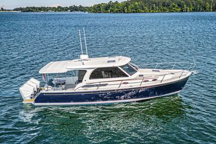

B-Atlas Boat Guide · BKCV-39O
Back Cove 39O Outboard Salon Cruiser
From 2020
The Back Cove 39O is a Maine-built Downeast cruiser emphasizing clean sightlines, practical cockpit-to-helm flow and efficient propulsion. The model combines lobster-boat-influenced styling with contemporary recreational construction and accommodations.

- LOA
- 43.5 ft
- LWL
- 38 ft
- Beam
- 13.5 ft
- Draft
- 2.33 ft
- Hull behaviour
- Planing
- Fuel
- Gasoline
- Propulsion
- Outboard
- Engine configuration
- Triple gasoline outboards standard; twin 600 hp outboards also offered
- Boat family
- Express Cruiser
- Construction
- Fiberglass
Best for
- Couples wanting traditional Downeast styling with modern systems
- Coastal and inland cruising at moderate-to-fast cruising speeds
- Owners who value protected helm visibility and straightforward deck circulation
Trade-offs
- Performance-oriented Downeast cruisers use more fuel than displacement trawlers
- Accommodation volume is concentrated forward rather than in multiple private cabins on smaller models
- Mechanical access and system complexity increase materially with size
Known concerns
- No model-specific concern has been promoted to B-Atlas’s evidence threshold. This does not mean the model has no age-, condition- or hull-specific risks.
Inspection focus
- Inspect hull/deck coring around hardware and penetrations
- Verify engine, cooling, exhaust and drive-system service history
- Inspect hydraulic/electric helm-deck mechanisms where fitted
- Confirm air draft, mast and antenna configuration
- Verify tank capacities and propulsion package for the exact model year
Continue researching
Related boat models
Back Cove 37 Downeast Cruiser
42 ft · Planing
Back Cove 41 Flagship Downeast Cruiser
46.08 ft · Planing
Back Cove 34 Downeast Cruiser
38.42 ft · Planing
Cruisers Yachts 3870 Esprit / Express Express Cruiser
43.25 ft · Planing
Back Cove 32 Downeast Cruiser
37 ft · Planing
Sabre 38 Salon Express Salon Express
41.75 ft · Planing
About this record
B-Atlas preserves uncertainty: missing information remains unknown rather than being treated as a negative. Specifications and guidance describe the model record; individual boats can differ by year, equipment, refit and condition.